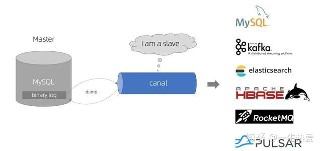
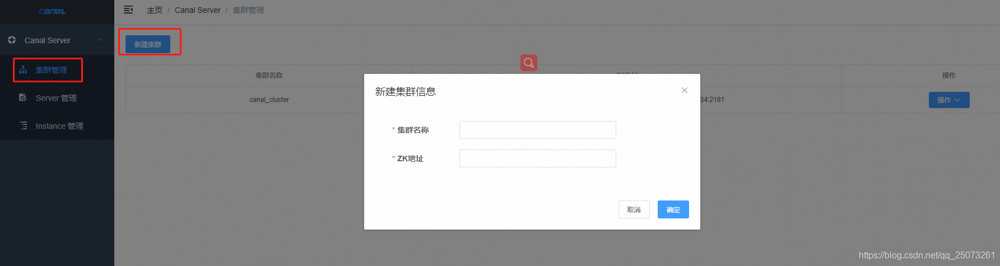
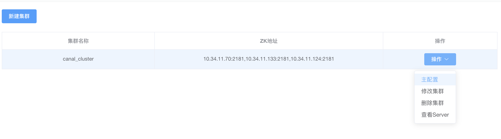
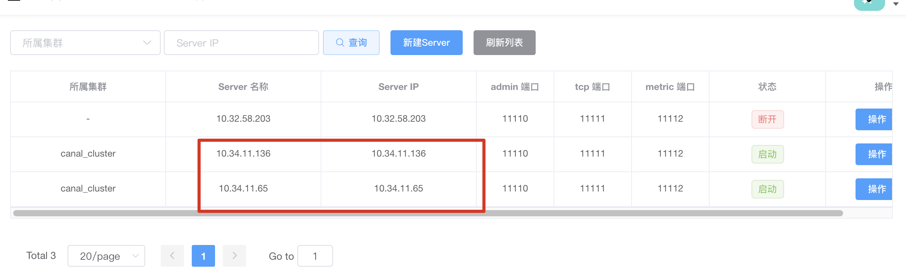

# 简介
canal 是纯 Java 开发。基于数据库增量日志解析，提供增量数据订阅 & 消费，目前主要支持了 MySQL

MySQL 主备复制原理
- MySQL master 将数据变更写入二进制日志 (binary log, 其中记录叫做二进制日志事件 binary log events，可以通过 show binlog events 进行查看)
- MySQL slave 将 master 的 binary log events 拷贝到它的中继日志 (relay log)
- MySQL slave 重放 relay log 中事件，将数据变更反映它自己的数据
Cannel 工作原理
canal 模拟 MySQL slave 的交互协议，伪装自己为 MySQL slave ，向 MySQL master 发送 dump 协议 - canal 模拟 MySQL slave 的交互协议，伪装自己为 MySQL slave ，向 MySQL master 发送 dump 协议
- MySQL master 收到 dump 请求，开始推送 binary log 给 slave (即 canal)
- canal 解析 binary log 对象 (原始为 byte 流)
官方文档
# 配置 mysql 环境
需要先开启 Binlog 写入功能，配置 binlog-format 为 ROW 模式
修改 my.cnf，mysql 一般位于 maridb 一般位于
[mysqld]
log-bin=mysql-bin # 开启 binlog
binlog-format=ROW # 选择 ROW 模式
server_id=1 # 配置 MySQL replaction 需要定义，不要和 canal 的 slaveId 重复
验证
# 是否启用了日志show variables like 'log_bin';
show global variables like "%log_bin%";
# 怎样知道当前的日志show master status;# 查看 mysql binlog 模式show variables like 'binlog_format';
# 获取 binlog 文件列表show binary logs;# 查看置顶 binglog 文件的内容show binlog events in 'mysql-bin.000008'
授权 canal
-- 连接 mysql 账号具有 mysql slave 的权限，如果已有账号可直接 grant 授权create user canal identified by 'canal';
grant select ,replication slave,replication client on *.* to 'canal'@'%';
flush privileges
# 搭建 canal 环境 (单机)
下载 canal (1.1.4) 版本
wget https://github.com/alibaba/canal/releases/download/canal-1.1.4/canal.deployer-1.1.4.tar.gzmkdir /tmp/canaltar zxvf canal.deployer-$version.tar.gz -C /tmp/canal
解压后目录结构
drwxr-xr-x@ 7 jiedeng staff 224B 6 5 09:07 bin
drwxr-xr-x@ 10 jiedeng staff 320B 6 4 10:32 conf
drwxr-xr-x@ 83 jiedeng staff 2.6K 6 1 14:24 lib
drwxr-xr-x@ 9 jiedeng staff 288B 6 3 14:37 logs
修改配置文件
################################################### mysql serverIdcanal.instance.mysql.slaveId = 1234
# position info，需要改成自己的数据库信息canal.instance.master.address = 127.0.0.1:3306
canal.instance.master.journal.name =
canal.instance.master.position =
canal.instance.master.timestamp =
#canal.instance.standby.address =#canal.instance.standby.journal.name =#canal.instance.standby.position =#canal.instance.standby.timestamp =# username/password，需要改成自己的数据库信息canal.instance.dbUsername = canal
canal.instance.dbPassword = canal
canal.instance.defaultDatabaseName = sampledata
canal.instance.connectionCharset = UTF-8
# table regexcanal.instance.filter.regex = .*\\..*
启动 / 关闭
bin/startup.sh # 启动bin/stop.sh # 关闭查看日志
tail logs/canal/canal.log#| 2020-06-05 14:26:26.064 [main] INFO com.alibaba.otter.canal.deployer.CanalStarter - ## start the canal server.#| 2020-06-05 14:26:26.082 [main] INFO com.alibaba.otter.canal.deployer.CanalController - ## start the canal server[10.32.58.203(10.32.58.203):11111]#| 2020-06-05 14:26:26.826 [main] INFO com.alibaba.otter.canal.deployer.CanalStarter - ## the canal server is running now ......tail logs/example/example.log#| 2020-06-05 14:32:01.353 [main] INFO c.a.otter.canal.instance.spring.CanalInstanceWithSpring - start CannalInstance for 1-example#| 2020-06-05 14:32:01.359 [main] WARN c.a.o.canal.parse.inbound.mysql.dbsync.LogEventConvert - --> init table filter : ^.*\..*$#| 2020-06-05 14:32:01.359 [main] WARN c.a.o.canal.parse.inbound.mysql.dbsync.LogEventConvert - --> init table black filter :#| 2020-06-05 14:32:01.365 [main] INFO c.a.otter.canal.instance.core.AbstractCanalInstance - start successful....运行 canal-client
新建 maven 工程，添加 pom 依赖
<dependency><groupId>com.alibaba.otter</groupId>
<artifactId>canal.client</artifactId>
<version>1.1.4</version>
</dependency>CanalClientDemo.java
package com.zjft;
import com.alibaba.otter.canal.client.CanalConnector;
import com.alibaba.otter.canal.client.CanalConnectors;
import com.alibaba.otter.canal.protocol.CanalEntry.*;
import com.alibaba.otter.canal.protocol.Message;
import com.google.protobuf.InvalidProtocolBufferException;
import java.net.InetSocketAddress;
import java.util.List;
import java.util.stream.Stream;
public class CanalClientDemo {
private static String SERVER_ADDRESS = "127.0.0.1";
private static Integer PORT = 11111;
// 目的地，canal server 里面的一个队列private static String DESTINATION = "example";
private static String USERNAME = "";
private static String PASSWORD = "";
private static Integer BATCHSIZE = 1000;
public static void main(String[] args) {
int emptyCount = 0;
// 连接CanalConnector connector = CanalConnectors.newSingleConnector(new InetSocketAddress(SERVER_ADDRESS, PORT), DESTINATION,USERNAME, PASSWORD);
try{
connector.connect();
// 订阅connector.subscribe(".*\\..*");
// 回滚到上次 ack 的位置connector.rollback();
while(true){
// 获取指定数量的数据，不做确认Message message = connector.getWithoutAck(BATCHSIZE);
long batchId = message.getId();
int size = message.getEntries().size();
if(batchId == -1 && size == 0){
emptyCount++;
System.out.println("empty count : " + emptyCount);
try {
Thread.sleep(10000);
} catch (InterruptedException e) {
}}else{
System.out.println("batchId-->"+batchId);
printEntity(message.getEntries());
//connector.ack(batchId);//connector.rollback(batchId)}}}finally {
// 关闭连接connector.disconnect();
}}public static void printEntity(List<Entry> entries){
for (Entry entry : entries) {
// 该条数据的数据类型是事务开始或事务结束，不是 binlog 二进制数据本身，就跳过继续处理// 注意：这里是有 bug 的，当 mysql 开启 binlog，且为 Row 行模式，且开启了在 binlog 中显示原始 SQL。// 这时就会有一种新增的类型：CanalEntry.EventType.QUERY// 原始//if (entry.getEntryType() == CanalEntry.EntryType.TRANSACTIONBEGIN || entry.getEntryType() == CanalEntry.EntryType.TRANSACTIONEND) {// continue;//}// 修改为 只保留 binlog 部分对应的 Entry 并解析if (entry.getEntryType() == EntryType.TRANSACTIONBEGIN // 跳过事务开始的 Entry
|| entry.getEntryType() == EntryType.TRANSACTIONEND // 跳过事务结束的 Entry
|| entry.getHeader().getEventType() == EventType.QUERY // 跳过事务为原始 SQL 的 Entry
) {
continue;
}if (entry.getEntryType()!=EntryType.ROWDATA){
continue;
}RowChange rowChage = null;
try{
rowChage = RowChange.parseFrom(entry.getStoreValue());
}catch (Exception e){
throw new RuntimeException("ERROR ## parser of eromanga-event has an error , data:" + entry.toString(),
e);
}EventType eventType = rowChage.getEventType();
System.out.println(
String.format("================; binlog[%s:%s] , name[%s,%s] , eventType : %s ",
entry.getHeader().getLogfileName(), entry.getHeader().getLogfileOffset(),
entry.getHeader().getSchemaName(), entry.getHeader().getTableName(),
eventType));
for(RowData rowData :rowChage.getRowDatasList()) {
System.out.println("------->; before");
printColumn(rowData.getBeforeColumnsList());
System.out.println("------->; after");
printColumn(rowData.getAfterColumnsList());
}}}private static void printColumn(List<Column> columns) {
// columns.stream().map(System.out.println);for (Column column : columns) {
System.out.println(column.getName() + " : " + column.getValue() + " update=" + column.getUpdated());
}}}控制台日志
# insert into sampledata.tb_canal vlaues(1,'node1');# insert into sampledata.tb_canal vlaues(2,'node2');# update sampledata.tb_canal set name='node3' where id=1# delete from sampledata.tb_canal where id = 1;# ------- 客户端日志 ---------------================; binlog[mysql-bin.000008:5599050] , name[sampledata,tb_canal] , eventType : INSERT
------->; before
------->; after
id : 1 update=true
name : node1 update=true
================;
binlog[mysql-bin.000008:5599010] , name[sampledata,tb_canal] , eventType : INSERT
------->; before
------->; after
id : 2 update=true
name : node2 update=true
================;
binlog[mysql-bin.000008:5599322] , name[sampledata,tb_canal] , eventType : UPDATE
------->; before
id : 1 update=false
name : node1 update=false
------->; after
id : 1 update=false
name : node3 update=true
================;
binlog[mysql-bin.000008:5599605] , name[sampledata,tb_canal] , eventType : DELETE
-------> before
id : 1 update=false
name : node3 update=false
------->; after
# Canal Kafka
properties 配置分为两部分：
- canal.properties (系统根配置文件)
- instance.properties (instance 级别的配置文件，每个 instance 一份)
canal.properties 相关配置
# 将 binglog 输出到 kafkacanal.serverMode = kafka
# 默认实例文件夹，多个用逗号分隔canal.destinations = example
# 配置文件目录canal.conf.dir = ../conf
# 自动扫描实例目录添加 / 删除和启动 / 停止实例#canal.auto.scan = true# 只接受 dmlcanal.instance.filter.druid.ddl = true
canal.instance.filter.query.dcl = false
canal.instance.filter.query.dml = false
canal.instance.filter.query.ddl = true
canal.instance.filter.table.error = false
# 配置 kafka ，多台用 逗号 分隔canal.mq.servers = 10.34.11.154:6667,10.34.11.142:6667,10.34.11.142:6667
# 使用 json 格式canal.mq.flatMessage = true
canal.mq.acks = all
example/instance.properties
# 模拟 mysql slave 节点 id，不能重复canal.instance.mysql.slaveId=100
# mysql 节点canal.instance.master.address=127.0.0.1:3306
# 用户密码 编码canal.instance.dbUsername=canal
canal.instance.dbPassword=canal
canal.instance.connectionCharset = UTF-8
# mq config# kafka 主体canal.mq.topic=example_2
# canal 1.1.3 版本之后 允许对匹配条件的规则指定发送的 topic 名字# 例子 1: test:test\\.test 指定匹配的单表，发送到以 test 为名字的 topic 上# 例子 2: test:.*\\..* 匹配所有表，因为有指定 topic，则每个表都会发送到 test 的 topic 下# 例子 3: test:test 指定匹配对应的库，一个库的所有表都会发送到 test 的 topic 下# 例子 4：testA:test\\.* 指定匹配的表达式，针对匹配的表会发送到 testA 的 topic 下# 例子 5：test0:test,test1:test1\\.test1，指定多个表达式，会将 test 库的表都发送到 test0 的 topic 下，# test1\\.test1 的表发送到对应的 test1 的 topic 下，其余的表发送到默认的 canal.mq.topic 值canal.mq.dynamicTopic=boostrapA:boostrap
# 单队列模式的分区下标，canal.mq.partition=0
# hash partition config#散列模式的分区数#canal.mq.partitionsNum=3# canal 1.1.3 版本之后，支持配置格式：schema.table:pk1^pk2，多个配置之间使用逗号分隔# 例子 1：test\\.test:pk1^pk2 指定匹配的单表，对应的 hash 字段为 pk1 + pk2# 例子 2：.*\\..*:id 正则匹配，指定所有正则匹配的表对应的 hash 字段为 id# 例子 3：.*\\..*:$pk$ 正则匹配，指定所有正则匹配的表对应的 hash 字段为表主键 (自动查找)# 例子 4: 匹配规则啥都不写，则默认发到 0 这个 partition 上# 例子 5：.*\\..* ，不指定 pk 信息的正则匹配，将所有正则匹配的表，对应的 hash 字段为表名# 按表 hash: 一张表的所有数据可以发到同一个分区，不同表之间会做散列 (会有热点表分区过大问题)# 例子 6: test\\.test:id,.\\..* , 针对 test 的表按照 id 散列，其余的表按照 table 散列#canal.mq.partitionHash=test.table:id^name,.*\\..*Canal-Kafka 更多相关配置
启动
bin/bin/startup.sh
kafka 查看
bin/kafka-console-consumer.sh --bootstrap-server 10.34.11.154:6667 --topic example_2{"data":[{"a":"1","b":"10"}],"database":"sampledata","es":1591081315000,"id":2,"isDdl":false,"mysqlType":{"a":"int(11)","b":"char(11)"},"old":[{"b":"1"}],"pkNames":["a"],"sql":"","sqlType":{"a":4,"b":1},"table":"tb3","ts":1591081315384,"type":"UPDATE"}
{"data":null,"database":"sampledata","es":1591081442000,"id":3,"isDdl":true,"mysqlType":null,"old":null,"pkNames":null,"sql":"","sqlType":null,"table":"tb4","ts":1591081442795,"type":"CREATE"}
{"data":null,"database":"sampledata","es":1591081475000,"id":4,"isDdl":true,"mysqlType":null,"old":null,"pkNames":null,"sql":"","sqlType":null,"table":"tb4","ts":1591081475975,"type":"ERASE"}
{"data":[{"a":"1","b":"10"}],"database":"sampledata","es":1591081646000,"id":5,"isDdl":false,"mysqlType":{"a":"int(11)","b":"char(11)"},"old":null,"pkNames":["a"],"sql":"","sqlType":{"a":4,"b":1},"table":"tb3","ts":1591081647060,"type":"DELETE"}
偏移量保存
单机下 binlog 的偏移量是保存在 文件夹下的 meta.dat
{"clientDatas":[{"clientIdentity":{"clientId":1001,"destination":"example","filter":""},"cursor":{"identity":{"slaveId":-1,"sourceAddress":{"address":"localhost","port":3306}},"postion":{"gtid":"","included":false,"journalName":"mysql-bin.000008","position":5601892,"serverId":1,"timestamp":1591343595000}}}],"destination":"example"}
# 搭建 canal 环境 (HA)
机器准备
2 台 canal 服务器节点：10.34.11.136, 10.34.11.65
3 台 zookeeper 节点：10.34.11.70 ,10.34.11.133 ,10.34.11.124
mysql 服务器： 10.34.12.185
修改配置文件，在单台机器上各自完成配置
canal.propertis
canal.zkServers=10.34.11.70:2181,10.34.11.133:2181,10.34.11.124:2181
canal.instance.global.spring.xml = classpath:spring/default-instance.xml
example/instance.properties
canal.instance.mysql.slaveId = 1234 ##另外一台机器改成1235，保证slaveId不重复即可
canal.instance.master.address = 10.34.12.185:3306
运行
# 查看 zookeeper 节点信息get /otter/canal/destinations/example/running
{"active":true,"address":"10.34.11.136:11111"}
cZxid = 0x4b00016f22ctime = Wed Jun 03 16:09:55 CST 2020
mZxid = 0x4b00016f22mtime = Wed Jun 03 16:09:55 CST 2020
pZxid = 0x4b00016f22cversion = 0
dataVersion = 0
aclVersion = 0
ephemeralOwner = 0x37258e330ff1bb0dataLength = 44
numChildren = 0
# 触发 HA 自动切换场景 (server/client HA 模式都有效)
正常关闭（bin/stop.sh）
- 正常关闭 canal server (会释放 instance 的所有资源，包括删除 running 节点)
- 平滑切换 (gracefully)
#操作：更新对应 instance 的 running 节点内容，将 "active" 设置为 false，对应的 running 节点收到消息后，会主动释放 running 节点，让出控制权但自己 jvm 不退出，gracefully. | |
get /otter/canal/destinations/example/running | |
{"active":true,"address":"10.34.11.65:11111"} | |
cZxid = 0x4b0001e34e | |
ctime = Fri Jun 05 16:04:59 CST 2020 | |
mZxid = 0x4b0001e34e | |
mtime = Fri Jun 05 16:04:59 CST 2020 | |
pZxid = 0x4b0001e34e | |
cversion = 0 | |
dataVersion = 0 | |
aclVersion = 0 | |
ephemeralOwner = 0x17258e335f01b6e | |
dataLength = 45 | |
numChildren = 0 |
**异常场景**
- canal server对应的jvm异常crash，running节点的释放会在对应的zookeeper session失效后，释放running节点(EPHEMERAL节点) <font color='red'>ps. session过期时间默认为zookeeper配置文件中定义的tickTime的20倍，如果不改动zookeeper配置，那默认就是40秒</font>
- canal server所在的网络出现闪断，导致zookeeper认为session失效，释放了running节点，此时canal server对应的jvm并未退出，(一种假死状态，非常特殊的情况) <font color='red'> ps.为了保护假死状态的canal server，避免因瞬间runing失效导致instance重新分布，所以做了一个策略：canal server在收到running节点释放后，延迟一段时间抢占running，原本running节点的拥有者可以不需要等待延迟，优先取得running节点，可以保证假死状态下尽可能不无谓的释放资源。 目前延迟时间的默认值为5秒，即running节点针对假死状态的保护期为5秒.</font>
# canal-admin 界面化安装
下载
canal.admin-1.1.4
修改 conf/application.yml
server:
port: 8089
spring:
jackson:
date-format: yyyy-MM-dd HH:mm:ss
time-zone: GMT+8
spring.datasource:
address: 127.0.0.1:3306
database: canal_manager
username: canal
password: canal
driver-class-name: com.mysql.jdbc.Driver
url: jdbc:mysql://${spring.datasource.address}/${spring.datasource.database}?useUnicode=true&characterEncoding=UTF-8&useSSL=false
hikari:
maximum-pool-size: 30
minimum-idle: 1
canal:
adminUser: admin
adminPasswd: 4ACFE3202A5FF5CF467898FC58AAB1D615029441
在 mysql 运行 conf/canal_manager.sql
root -ucanal -pcanal
source conf/canal_manager.sql
use canal_managermysql> show tables;
+-------------------------+
| Tables_in_canal_manager |
+-------------------------+
| canal_adapter_config |
| canal_cluster |
| canal_config |
| canal_instance_config |
| canal_node_server |
| canal_user |
+-------------------------+
启动
bin/starup.sh
浏览器访问 127.0.0.1:8089 （默认用户 / 密码 admin/123456）
新建集群

选择编辑主配置

################################################# | |
######### common argument ############# | |
################################################# | |
# tcp bind ip | |
canal.ip = | |
# register ip to zookeeper | |
canal.register.ip = | |
canal.port = 11111 | |
canal.metrics.pull.port = 11112 | |
# canal instance user/passwd | |
# canal.user = canal | |
# canal.passwd = E3619321C1A937C46A0D8BD1DAC39F93B27D4458 | |
# canal admin config | |
#canal.admin.manager = 127.0.0.1:8089 | |
canal.admin.port = 11110 | |
canal.admin.user = admin | |
canal.admin.passwd = 4ACFE3202A5FF5CF467898FC58AAB1D615029441 | |
canal.zkServers =10.34.11.70:2181,10.34.11.133:2181,10.34.11.124:2181 | |
# flush data to zk | |
canal.zookeeper.flush.period = 1000 | |
canal.withoutNetty = false | |
# tcp, kafka, RocketMQ | |
canal.serverMode = kafka | |
# flush meta cursor/parse position to file | |
canal.file.data.dir = ${canal.conf.dir} | |
canal.file.flush.period = 1000 | |
## memory store RingBuffer size, should be Math.pow(2,n) | |
canal.instance.memory.buffer.size = 16384 | |
## memory store RingBuffer used memory unit size , default 1kb | |
canal.instance.memory.buffer.memunit = 1024 | |
## meory store gets mode used MEMSIZE or ITEMSIZE | |
canal.instance.memory.batch.mode = MEMSIZE | |
canal.instance.memory.rawEntry = true | |
## detecing config | |
canal.instance.detecting.enable = false | |
#canal.instance.detecting.sql = insert into retl.xdual values(1,now()) on duplicate key update x=now() | |
canal.instance.detecting.sql = select 1 | |
canal.instance.detecting.interval.time = 3 | |
canal.instance.detecting.retry.threshold = 3 | |
canal.instance.detecting.heartbeatHaEnable = false | |
# support maximum transaction size, more than the size of the transaction will be cut into multiple transactions delivery | |
canal.instance.transaction.size = 1024 | |
# mysql fallback connected to new master should fallback times | |
canal.instance.fallbackIntervalInSeconds = 60 | |
# network config | |
canal.instance.network.receiveBufferSize = 16384 | |
canal.instance.network.sendBufferSize = 16384 | |
canal.instance.network.soTimeout = 30 | |
# binlog filter config | |
canal.instance.filter.druid.ddl = true | |
canal.instance.filter.query.dcl = false | |
canal.instance.filter.query.dml = false | |
canal.instance.filter.query.ddl = false | |
canal.instance.filter.table.error = false | |
canal.instance.filter.rows = false | |
canal.instance.filter.transaction.entry = false | |
# binlog format/image check | |
canal.instance.binlog.format = ROW,STATEMENT,MIXED | |
canal.instance.binlog.image = FULL,MINIMAL,NOBLOB | |
# binlog ddl isolation | |
canal.instance.get.ddl.isolation = false | |
# parallel parser config | |
canal.instance.parser.parallel = true | |
## concurrent thread number, default 60% available processors, suggest not to exceed Runtime.getRuntime().availableProcessors() | |
#canal.instance.parser.parallelThreadSize = 16 | |
## disruptor ringbuffer size, must be power of 2 | |
canal.instance.parser.parallelBufferSize = 256 | |
# table meta tsdb info | |
canal.instance.tsdb.enable = true | |
canal.instance.tsdb.dir = ${canal.file.data.dir:../conf}/${canal.instance.destination:} | |
canal.instance.tsdb.url = jdbc:h2:${canal.instance.tsdb.dir}/h2;CACHE_SIZE=1000;MODE=MYSQL; | |
canal.instance.tsdb.dbUsername = canal | |
canal.instance.tsdb.dbPassword = canal | |
# dump snapshot interval, default 24 hour | |
canal.instance.tsdb.snapshot.interval = 24 | |
# purge snapshot expire , default 360 hour(15 days) | |
canal.instance.tsdb.snapshot.expire = 360 | |
# aliyun ak/sk , support rds/mq | |
canal.aliyun.accessKey = | |
canal.aliyun.secretKey = | |
################################################# | |
######### destinations ############# | |
################################################# | |
# canal.destinations = example | |
# conf root dir | |
canal.conf.dir = ../conf | |
# auto scan instance dir add/remove and start/stop instance | |
canal.auto.scan = true | |
canal.auto.scan.interval = 5 | |
canal.instance.tsdb.spring.xml = classpath:spring/tsdb/h2-tsdb.xml | |
#canal.instance.tsdb.spring.xml = classpath:spring/tsdb/mysql-tsdb.xml | |
canal.instance.global.mode = spring | |
canal.instance.global.lazy = false | |
canal.instance.global.manager.address = ${canal.admin.manager} | |
#canal.instance.global.spring.xml = classpath:spring/memory-instance.xml | |
canal.instance.global.spring.xml = classpath:spring/file-instance.xml | |
#canal.instance.global.spring.xml = classpath:spring/default-instance.xml | |
################################################## | |
######### MQ ############# | |
################################################## | |
canal.mq.servers = 10.34.11.154:6667,10.34.11.142:6667,10.34.11.142:6667 | |
canal.mq.retries = 0 | |
canal.mq.batchSize = 16384 | |
canal.mq.maxRequestSize = 1048576 | |
canal.mq.lingerMs = 100 | |
canal.mq.bufferMemory = 33554432 | |
canal.mq.canalBatchSize = 50 | |
canal.mq.canalGetTimeout = 100 | |
canal.mq.flatMessage = true | |
canal.mq.compressionType = none | |
canal.mq.acks = all | |
#canal.mq.properties. = | |
canal.mq.producerGroup = test | |
# Set this value to "cloud", if you want open message trace feature in aliyun. | |
canal.mq.accessChannel = local | |
# aliyun mq namespace | |
#canal.mq.namespace = | |
################################################## | |
######### Kafka Kerberos Info ############# | |
################################################## | |
canal.mq.kafka.kerberos.enable = false | |
canal.mq.kafka.kerberos.krb5FilePath = "../conf/kerberos/krb5.conf" | |
canal.mq.kafka.kerberos.jaasFilePath = "../conf/kerberos/jaas.conf" |
将上面 ha 搭建的两台 canal 停止
分别修改 conf/canal_local.properties
# register ipcanal.register.ip =10.34.11.136
# canal admin config# 绑定启动 canal.admin 的 ip:portcanal.admin.manager = 10.34.12.185:8089
canal.admin.port = 11110
canal.admin.user = admin
canal.admin.passwd = 4ACFE3202A5FF5CF467898FC58AAB1D615029441
# admin auto registercanal.admin.register.auto = true
# 填写页面写的集群名称canal.admin.register.cluster = canal_cluster
在分别启动 canal
bin/starup.sh local conf/canal_local.properties在 server 管理里面会多服务器

新建 instance , 指定所属集群为 canal_cluster
################################################### mysql serverId , v1.0.26+ will autoGen# canal.instance.mysql.slaveId=0# enable gtid use true/falsecanal.instance.gtidon=false
# position infocanal.instance.master.address=10.34.12.185:3306
canal.instance.master.journal.name=
canal.instance.master.position=
canal.instance.master.timestamp=
canal.instance.master.gtid=
# rds oss binlogcanal.instance.rds.accesskey=
canal.instance.rds.secretkey=
canal.instance.rds.instanceId=
# table meta tsdb infocanal.instance.tsdb.enable=true
# username/passwordcanal.instance.dbUsername=canal
canal.instance.dbPassword=canal
canal.instance.connectionCharset = UTF-8
# enable druid Decrypt database passwordcanal.instance.enableDruid=false
#canal.instance.pwdPublicKey=MFwwDQYJKoZIhvcNAQEBBQADSwAwSAJBALK4BUxdDltRRE5/zXpVEVPUgunvscYFtEip3pmLlhrWpacX7y7GCMo2/JM6LeHmiiNdH1FWgGCpUfircSwlWKUCAwEAAQ==# table regexcanal.instance.filter.regex=.*\\..*
# table black regexcanal.instance.filter.black.regex=
# table field filter(format: schema1.tableName1:field1/field2,schema2.tableName2:field1/field2)#canal.instance.filter.field=test1.t_product:id/subject/keywords,test2.t_company:id/name/contact/ch# table field black filter(format: schema1.tableName1:field1/field2,schema2.tableName2:field1/field2)#canal.instance.filter.black.field=test1.t_product:subject/product_image,test2.t_company:id/name/contact/ch# mq configcanal.mq.topic=example_1
# dynamic topic route by schema or table regex#canal.mq.dynamicTopic=mytest1.user,mytest2\\..*,.*\\..*canal.mq.partition=0
# hash partition config#canal.mq.partitionsNum=3#canal.mq.partitionHash=test.table:id^name,.*\\..*#################################################